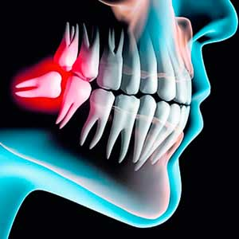
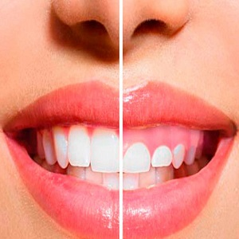
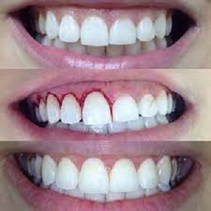
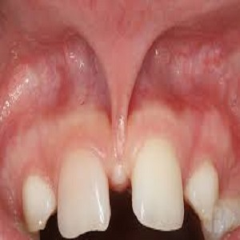
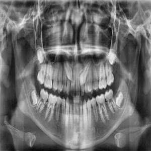
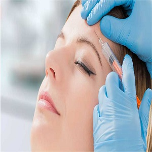

Especialidades Dentales Segovia
CIRUGÍA DE TERCEROS MOLARES
La extracción quirúrgica de terceros molares es una intervención muy frecuente que está suscitando cada vez más controversia.
En la guía interdisciplinaria actual se ha adoptado una postura más clara sobre todo respecto a la cuestión de la extracción de terceros molares asintomáticos.
Dado que se suele tratar de una intervención programada asociada a una serie de complicaciones conocidas, en la información preoperatoria al paciente hay que cumplir unos requisitos relativamente estrictos.
|

|

|
BICHETOMIA
La Bichectomía tiene objetivo eliminar las conocidas bolas de bichat (unos pequeños cúmulos de grasa que se encuentran en las mejillas).
|
GINGIVECTOMIA
La gingivectomía es una cirugía periodontal que se centra en las encías. Consiste en la eliminación de tejido gingival con el propósito de eliminar o reducir las bolsas periodontales, cuando el hueso no se ve afectado.
Se realiza la escisión y supresión del tejido gingival lesionado.
|

|
|

|
GINGIVOPLASTIA
La gingivoplastia es una cirugía periodontal muy parecida a la gingivectomía, aunque su objetivo es distinto.
En este caso lo que el facultativo pretende es devolver el contorno de la encía cuando se ha perdido la bolsa periodontal.
|
FRENILECTOMIA
La Frenilectomia se trata de una intervención mínimamente invasiva que sirve para corregir anomalías en los frenillos labiales y lingual.
|

|
|

|
CANINOS
La extracción de los caninos incrustados por medio de una operacion estetica y de cuidado mediante anestacia
|
BOTOX
Aplicacion del Botox para el tratamiento de problemas como las sonrisas gingivales y el trastorno de la ATM.
Esto se debe a que sirve como relajante muscular natural, que es como funciona en los tratamientos antiarrugas.
|

|